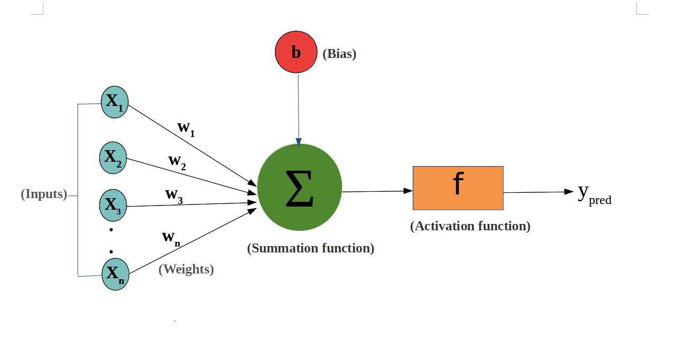
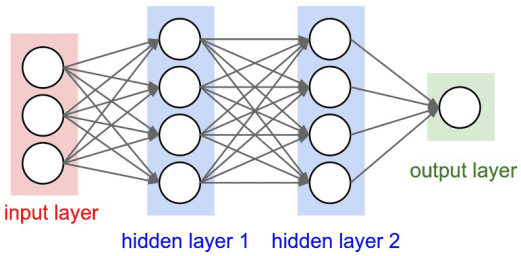

PyTorch Neural Network Basics
A neural network is a computational model that mimics the way the human brain processes information. It consists of many interconnected nodes (neurons) arranged in layers.
The power of neural networks lies in their ability to automatically learn complex patterns and features from large amounts of data, without the need for manually designed feature extractors.
With the development of deep learning, neural networks have become a key technology for solving many complex problems.
Neuron
A neuron is the basic unit of a neural network. It receives input signals, computes a weighted sum, adds a bias, and then passes the result through an activation function to produce an output.
The weights and biases of a neuron are the parameters that need to be adjusted during the network learning process.
Input and Output:
- Input: The input is the starting point of the network and can be feature data, such as image pixel values or text word vectors.
- Output: The output is the endpoint of the network, representing the model's prediction result, such as the class label in a classification task.
A neuron receives multiple inputs (e.g., x1, x2, ..., xn). If the weighted sum of the inputs is greater than the activation threshold (activation potential), it produces a binary output.

The output of a neuron can be viewed as the weighted sum of its inputs plus a bias. The mathematical representation of a neuron is:

Here,wjis the weight,xjis the input, andBiasis the bias term.
Layer
The layers between the input layer and the output layer are called hidden layers. The density and type of connections between layers constitute the network configuration.
A neural network is composed of multiple layers, including:
- Input Layer: Receives raw input data.
- Hidden Layer: Processes the input data; there can be multiple hidden layers.
- Output Layer: Produces the final output result.
Typical neural network architecture:

Demo diagram:
Feedforward Neural Network (FNN)
The feedforward neural network (FNN) is a basic unit in the neural network family.
The characteristic of a feedforward neural network is that data flows from the input layer, through one or more hidden layers, and finally reaches the output layer, without any loops or feedback throughout the process.

Basic structure of a feedforward neural network:
-
Input layer:The entry point where data enters the network. Each node in the input layer represents an input feature.
Hidden layer:One or more layers used to capture nonlinear features of the data. Each hidden layer consists of multiple neurons, and each neuron increases nonlinearity through an activation function.
Output layer:Outputs the network's prediction result. The number of nodes depends on the problem type; for example, the number of output nodes in a classification problem equals the number of classes.
Connection weights and biases:The inputs to each neuron are weighted and summed, then a bias is added, and the result is passed through an activation function.
Recurrent Neural Network (RNN)
A recurrent neural network (RNN) is a type of neural network specifically designed to process sequence data, capable of capturing dependencies in temporal or sequential information within the input data.
The special feature of RNNs is their "memory ability"—they can store information from previous time steps in the network's hidden state.
Recurrent neural networks are used to process data patterns that change over time.
In RNN, the same layer is used to receive input parameters and display output parameters in the specified neural network.

PyTorch provides powerful tools for building and training neural networks.
Neural networks in PyTorch aretorch.nnimplemented through the module.
torch.nnThe module provides various network layers (such as fully connected layers, convolutional layers, etc.), loss functions, and optimizers, making it more convenient to build and train neural networks.

In PyTorch, building a neural network usually requires inheriting from the nn.Module class.
nn.Module is the base class for all neural network modules. You need to define the following two parts:
__init__(): Define the network layers.forward(): Define the forward propagation process of data.
Simple Fully Connected Neural Network:
Example
import torch.nn as nn
# Define a simple neural network model
class SimpleNN(nn.Module):
def __init__(self):
super(SimpleNN, self).__init__()
# Define a fully connected layer from the input layer to the hidden layer
self.fc1 = nn.Linear(2, 2) # Input 2 features, output 2 features
# Define a fully connected layer from the hidden layer to the output layer
self.fc2 = nn.Linear(2, 1) # Input 2 features, output 1 predicted value
def forward(self, x):
# Forward propagation process
x = torch.relu(self.fc1(x)) # Use ReLU activation function
x = self.fc2(x) # Output layer
return x
# Create model instance
model = SimpleNN()
# Print model
print(model)
The output result is as follows:
SimpleNN( (fc1): Linear(in_features=2, out_features=2, bias=True) (fc2): Linear(in_features=2, out_features=1, bias=True) )
PyTorch provides many common neural network layers. Here are a few common ones:
nn.Linear(in_features, out_features): Fully connected layer, inputin_featuresfeatures, outputout_featuresfeatures.nn.Conv2d(in_channels, out_channels, kernel_size): 2D convolutional layer, used for image processing.nn.MaxPool2d(kernel_size): 2D max pooling layer, used for dimensionality reduction.nn.ReLU(): ReLU activation function, commonly used in hidden layers.nn.Softmax(dim): Softmax activation function, usually used in the output layer, suitable for multi-class classification problems.
Activation Function
Activation functions determine whether a neuron should be activated. They are nonlinear functions that enable neural networks to learn and perform more complex tasks. Common activation functions include:
- Sigmoid: Used for binary classification problems, with output values between 0 and 1.
- Tanh: Output values are between -1 and 1, often used before the output layer.
- ReLU (Rectified Linear Unit): One of the most popular activation functions currently, defined as
f(x) = max(0, x), which helps solve the vanishing gradient problem. - Softmax: Often used in the output layer for multi-class classification problems; converts outputs into a probability distribution.
Example
# ReLU activation
output = F.relu(input_tensor)
# Sigmoid activation
output = torch.sigmoid(input_tensor)
# Tanh activation
output = torch.tanh(input_tensor)
Loss Function
The loss function is used to measure the difference between the model's predicted values and the true values.
Common loss functions include:
- Mean Squared Error (MSELoss): Commonly used for regression problems; computes the squared difference between the output and the target value.
- Cross-Entropy Loss (CrossEntropyLoss): Commonly used for classification problems; computes the cross-entropy between the output and the true labels.
- BCEWithLogitsLoss: For binary classification problems; combines the Sigmoid activation and binary cross-entropy loss.
Example
criterion = nn.MSELoss()
# Cross-entropy loss
criterion = nn.CrossEntropyLoss()
# Binary cross-entropy loss
criterion = nn.BCEWithLogitsLoss()
Optimizer
The optimizer is responsible for updating the network's weights and biases during the training process.
Common optimizers include:
- SGD (Stochastic Gradient Descent)
- Adam (Adaptive Moment Estimation)
- RMSprop (Root Mean Square Propagation)
Example
# Use SGD optimizer
optimizer = optim.SGD(model.parameters(), lr=0.01)
# Use Adam optimizer
optimizer = optim.Adam(model.parameters(), lr=0.001)
Training Process
Training a neural network involves the following steps:
- Prepare data: by
DataLoaderloading the data. - Define the loss function and optimizer。
- Forward propagation: compute the model's output.
- Compute the loss: compare with the target to get the loss value.
- Backpropagation: by
loss.backward()computing the gradients. - Update parameters: by
optimizer.step()updating the model's parameters. - Repeat the above stepsuntil the predetermined number of training epochs is reached.
Example
# Example training data
X = torch.randn(10, 2) # 10 samples, each with 2 features
Y = torch.randn(10, 1) # 10 target labels
# Training process
for epoch in range(100): # Train for 100 epochs
model.train() # Set the model to training mode
optimizer.zero_grad() # Clear gradients
output = model(X) # Forward propagation
loss = criterion(output, Y) # Compute loss
loss.backward() # Backpropagation
optimizer.step() # Update weights
if (epoch + 1) % 10 == 0: # Print the loss every 10 epochs
print(f'Epoch [{epoch + 1}/100], Loss: {loss.item():.4f}')
Testing and Evaluation
After training is complete, the model needs to be tested and evaluated.
Common steps include:
- Compute the loss on the test set: evaluate the model's performance on unseen data.
- Compute accuracy: for classification problems, compute the proportion of correct predictions.
Example
model.eval() # Set the model to evaluation mode
with torch.no_grad(): # Disable gradient computation during evaluation
output = model(X_test)
loss = criterion(output, Y_test)
print(f'Test Loss: {loss.item():.4f}')
Neural Network Types
- Feedforward Neural Networks: data flows in one direction, from the input layer to the output layer, with no feedback connections.
- Convolutional Neural Networks (CNNs): suitable for image processing, using convolutional layers to extract spatial features.
- Recurrent Neural Networks (RNNs): suitable for sequential data, such as time series analysis and natural language processing, allowing information feedback loops.
- Long Short-Term Memory (LSTM): a special type of RNN that can learn long-term dependencies.
torch.nn Reference
The following are the most commonly used in PyTorchtorch.nnfunctions and classes:
Model Definition Basics
| Function | Description | Example |
|---|---|---|
| nn.Module | Base class for all neural network modules | class Net(nn.Module): ... |
| nn.Sequential | Sequential container that executes layers in order | nn.Sequential(conv, relu, pool) |
| nn.ModuleList | Stores submodules in a list | self.layers = nn.ModuleList([...]) |
| nn.Parameter | Creates a learnable parameter tensor | self.w = nn.Parameter(torch.randn(n)) |
Convolutional Layers
| Function | Description | Example |
|---|---|---|
| nn.Conv1d | 1D convolution (text, audio) | nn.Conv1d(3, 64, 3) |
| nn.Conv2d | 2D convolution (image) | nn.Conv2d(3, 64, 3, padding=1) |
| nn.Conv3d | 3D convolution (video) | nn.Conv3d(3, 64, 3) |
| nn.ConvTranspose2d | Transposed convolution (decoder, upsampling) | nn.ConvTranspose2d(64, 3, 2, stride=2) |
Pooling Layers
| Function | Description | Example |
|---|---|---|
| nn.MaxPool2d | 2D max pooling | nn.MaxPool2d(2, 2) |
| nn.AvgPool2d | 2D average pooling | nn.AvgPool2d(2, 2) |
| nn.AdaptiveAvgPool2d | Adaptive average pooling (fixed output size) | nn.AdaptiveAvgPool2d((1, 1)) |
| nn.AdaptiveMaxPool2d | Adaptive max pooling (fixed output size) | nn.AdaptiveMaxPool2d((1, 1)) |
Linear Layers
| Function | Description | Example |
|---|---|---|
| nn.Linear | Fully connected layer (linear transformation) | nn.Linear(128, 64) |
| nn.Bilinear | Bilinear layer | nn.Bilinear(128, 64, 32) |
| Function | Description | Example |
| nn.ReLU | ReLU activation function, f(x) = max(0, x) | nn.ReLU() |
| nn.GELU | Gaussian Error Linear Unit (default in Transformer) | nn.GELU() |
| nn.SiLU | Swish activation function | nn.SiLU() |
| nn.Tanh | Hyperbolic tangent | nn.Tanh() |
| nn.Sigmoid | Sigmoid activation function | nn.Sigmoid() |
| nn.Softmax | Softmax activation function | nn.Softmax(dim=1) |
| nn.LogSoftmax | Log Softmax (numerically stable) | nn.LogSoftmax(dim=1) |
| nn.LeakyReLU | LeakyReLU, allows small gradients for negative values | nn.LeakyReLU(0.01) |
| nn.ELU | Exponential Linear Unit | nn.ELU() |
Normalization Layers
| Function | Description | Example |
|---|---|---|
| nn.BatchNorm2d | 2D batch normalization (commonly used in convolutional networks) | nn.BatchNorm2d(64) |
| nn.LayerNorm | Layer normalization (commonly used in Transformers) | nn.LayerNorm(512) |
| nn.GroupNorm | Group normalization (commonly used in ResNet, etc.) | nn.GroupNorm(4, 64) |
| nn.InstanceNorm2d | Instance normalization (commonly used in style transfer) | nn.InstanceNorm2d(64) |
Recurrent Layers
| Function | Description | Example |
|---|---|---|
| nn.LSTM | LSTM (Long Short-Term Memory) layer | nn.LSTM(256, 512, 2) |
| nn.GRU | GRU (Gated Recurrent Unit) layer | nn.GRU(256, 512, 2) |
| nn.RNN | Simple RNN layer | nn.RNN(256, 512, 2) |
Transformer Layers
| Function | Description | Example |
|---|---|---|
| nn.Transformer | Complete Transformer model | nn.Transformer(d_model=512, nhead=8) |
| nn.TransformerEncoder | Transformer encoder | nn.TransformerEncoder(layer, num_layers=6) |
| nn.TransformerDecoder | Transformer decoder | nn.TransformerDecoder(layer, num_layers=6) |
| nn.TransformerEncoderLayer | Transformer encoder layer | nn.TransformerEncoderLayer(512, 8) |
| nn.MultiheadAttention | Multi-head attention mechanism | nn.MultiheadAttention(512, 8) |
Embedding Layers
| Function | Description | Example |
|---|---|---|
| nn.Embedding | Embedding layer (maps vocabulary to vectors) | nn.Embedding(10000, 256) |
| nn.EmbeddingBag | Embedding bag (aggregates multiple embeddings) | nn.EmbeddingBag(10000, 256) |
Dropout Layers
| Function | Description | Example |
|---|---|---|
| nn.Dropout | Random dropout (prevents overfitting) | nn.Dropout(0.5) |
| nn.Dropout2d | 2D Dropout (drops entire feature maps) | nn.Dropout2d(0.5) |
Loss Functions
| Function | Description | Example |
|---|---|---|
| nn.CrossEntropyLoss | Cross-entropy loss (multi-class classification) | nn.CrossEntropyLoss() |
| nn.MSELoss | Mean squared error loss (regression) | nn.MSELoss() |
| nn.L1Loss | L1 loss (MAE) | nn.L1Loss() |
| nn.BCEWithLogitsLoss | Binary cross-entropy with Sigmoid | nn.BCEWithLogitsLoss() |
| nn.HuberLoss | Huber loss (robust regression) | nn.HuberLoss() |
| nn.NLLLoss | Negative log-likelihood loss | nn.NLLLoss() |
Functional functions (nn.functional)
| Function | Description | Example |
|---|---|---|
F.relu |
ReLU activation | F.relu(x) |
F.gelu |
GELU activation | F.gelu(x) |
F.sigmoid |
Sigmoid activation | F.sigmoid(x) |
F.softmax |
Softmax activation | F.softmax(x, dim=1) |
F.dropout |
Dropout operation | F.dropout(x, 0.5, training) |
F.conv2d |
2D convolution | F.conv2d(x, weight, bias) |
F.linear |
Linear transformation | F.linear(x, weight, bias) |
F.cross_entropy |
Cross-entropy loss | F.cross_entropy(logits, targets) |
F.mse_loss |
Mean squared error loss | F.mse_loss(pred, target) |
F.interpolate |
Interpolation (upsampling/downsampling) | F.interpolate(x, scale_factor=2) |
F.embedding |
Embedding operation | F.embedding(indices, weight) |
Utility functions (nn.init)
| Function | Description | Example |
|---|---|---|
nn.init.xavier_uniform_ |
Xavier uniform initialization | nn.init.xavier_uniform_(module.weight) |
nn.init.xavier_normal_ |
Xavier normal initialization | nn.init.xavier_normal_(module.weight) |
nn.init.kaiming_uniform_ |
Kaiming uniform initialization (suitable for ReLU) | nn.init.kaiming_uniform_(module.weight) |
nn.init.kaiming_normal_ |
Kaiming normal initialization (suitable for ReLU) | nn.init.kaiming_normal_(module.weight) |
nn.init.zeros_ |
Zero initialization | nn.init.zeros_(module.bias) |
nn.init.normal_ |
Normal initialization | nn.init.normal_(module.weight, 0, 0.01) |
Utility functions (nn.utils)
| Function | Description | Example |
|---|---|---|
nn.utils.clip_grad_norm_ |
Clip gradient norm (prevents gradient explosion) | nn.utils.clip_grad_norm_(model.parameters(), 1.0) |
nn.utils.weight_norm |
Weight normalization | nn.utils.weight_norm(module, 'weight') |
nn.utils.spectral_norm |
Spectral normalization (commonly used in GANs) | nn.utils.spectral_norm(module, 'weight') |
nn.utils.rnn.pack_padded_sequence |
Pack variable-length sequences | pack_padded_sequence(x, lengths) |
nn.utils.rnn.pad_packed_sequence |
Unpack sequences | pad_packed_sequence(packed) |
Click me to share notes
<p style="font-size:14px;">Notes need to be an extension of the content of this article!</p><br> <p style="font-size:12px;"><a href="../tougao.html" target="_blank">Article submission, click here</a></p> <p style="font-size:14px;"><a href="../w3cnote/runoob-user-test-intro.html" target="_blank">How to get registration invitation code</a></p> <h3 class="text-muted"><i class="fa fa-info-circle" aria-hidden="true"></i> You must <a href=";.html" class="runoob-pop">log in</a> before sharing notes!</h3> <p><a href="../w3cnote/runoob-user-test-intro.html" target="_blank">How to get registration invitation code</a></p>